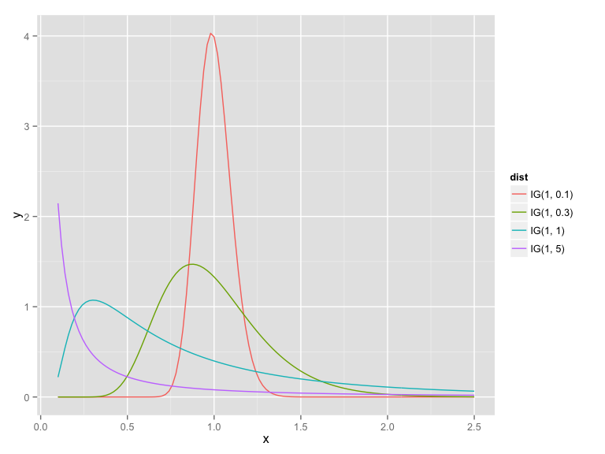
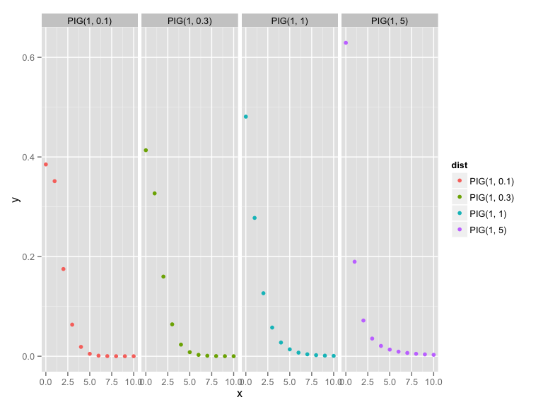
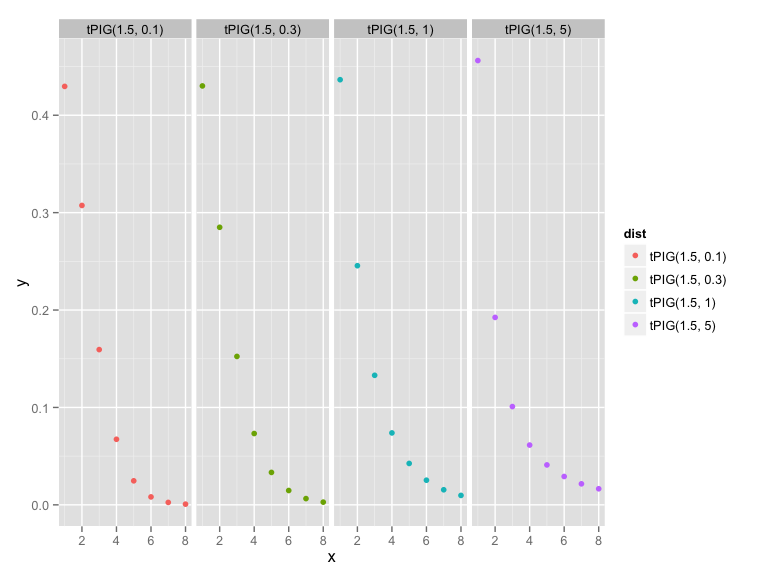
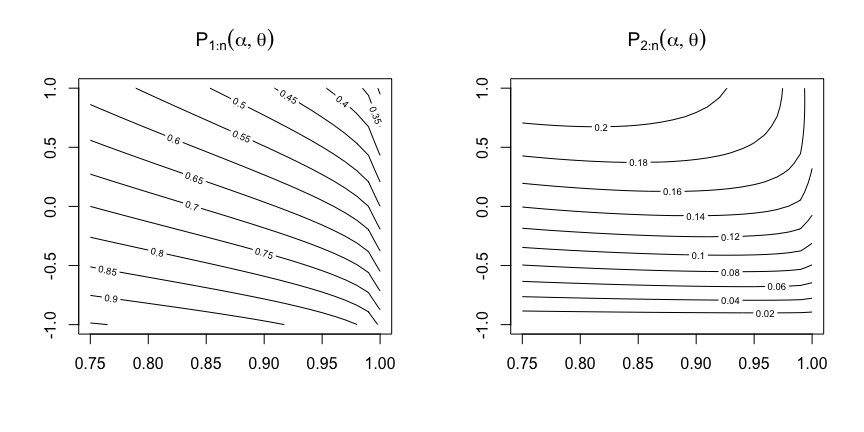

library("tm")
?PlainTextDocument
?removePunctuation
?termFreqchap5 <- readLines("data/Tirant lo Blanc Chapter 5", encoding = "UTF-8")
library("tm")
chap5 <- PlainTextDocument(chap5)
chap5 <- gsub("'", " ", chap5)
chap5 <- removePunctuation(chap5)
freq_chap5 <- termFreq(chap5)
table(freq_chap5)## freq_chap5
## 1 2 3 4 5 6 7 9 10 11 13 17 18 20 21 22 34
## 299 49 23 15 6 5 1 1 1 1 1 1 1 1 1 1 1library(gamlss)
?IG # Inverse Gaussian distribution
?dIG
?PIG # Poisson-inverse Gaussian distribution
?dPIG\(f(x|\mu,\lambda) = \left(\frac{\lambda}{2\pi x^3}\right)^{1/2} \exp\left(\frac{-\lambda (x-\mu)^2}{2 \mu^2 x}\right), x \in (0, \infty)\)

library("gamlss")
x <- seq(0.1, 2.5, by = 0.02)
IG1 <- data.frame(x = x, y = dIG(x, 1, 5), dist = "IG(1, 5)", stringsAsFactors= FALSE)
IG2 <- data.frame(x = x, y = dIG(x, 1, 1), dist = "IG(1, 1)", stringsAsFactors= FALSE)
IG3 <- data.frame(x = x, y = dIG(x, 1, 0.1), dist = "IG(1, 0.1)", stringsAsFactors= FALSE)
IG4 <- data.frame(x = x, y = dIG(x, 1, 0.3), dist = "IG(1, 0.3)", stringsAsFactors= FALSE)
IG_prior <- rbind(IG1, IG2, IG3, IG4)
library(ggplot2)
qplot(x, y, data = IG_prior, geom = "line", col = dist)\(e^{\alpha \sqrt{(1 -\theta)}} \sqrt{ \frac{2 \alpha}{\pi}} \frac{(\frac{1}{2} \alpha \theta)^r}{r!} K_{r - \frac{1}{2}}(\alpha)\)

x <- 0:10
PIG1 <- data.frame(x = x, y = dPIG(x, 5, 5), dist = "PIG(5, 5)", stringsAsFactors= FALSE)
PIG2 <- data.frame(x = x, y = dPIG(x, 1, 1), dist = "PIG(1, 1)", stringsAsFactors= FALSE)
PIG3 <- data.frame(x = x, y = dPIG(x, 1, 0.1), dist = "PIG(1, 0.1)", stringsAsFactors= FALSE)
PIG4 <- data.frame(x = x, y = dPIG(x, 1, 0.3), dist = "PIG(1, 0.3)", stringsAsFactors= FALSE)
PIG_prior <- rbind(PIG1, PIG2, PIG3, PIG4)
library(ggplot2)
qplot(x, y, data = PIG_prior, geom = "point", col = dist) + facet_grid(.~ dist)\[P(X = k | X > 0) = \frac{P(X = k \cap X> 0)}{1 - P(X = 0)}\]
library("gamlss.tr")
trun.d(par = 0, family = "PIG", type = "left")
?trun.p; ?trun.q, ...
library("gamlss.tr")
dtPIG <- trun.d(par = 0, family = "PIG", type = "left")
x <- 1:8
tPIG1 <- data.frame(x = x, y = dtPIG(x, 1.5, 1), dist = "tPIG(1.5, 1)", stringsAsFactors= FALSE)
tPIG2 <- data.frame(x = x, y = dtPIG(x, mu = 1.5, sigma = 4), dist = "tPIG(1.5, 2)", stringsAsFactors= FALSE)
tPIG3 <- data.frame(x = x, y = dtPIG(x, 1.5, 0.1), dist = "tPIG(1.5, 0.1)", stringsAsFactors= FALSE)
tPIG4 <- data.frame(x = x, y = dtPIG(x, 1.5, 0.3), dist = "tPIG(1.5, 0.3)", stringsAsFactors= FALSE)
tPIG_prior <- rbind(tPIG1, tPIG2, tPIG3, tPIG4)
library(ggplot2)
qplot(x, y, data = tPIG_prior, geom = "point", col = dist) + facet_grid(.~ dist)
p1 <- function(alpha, theta){
0.5*alpha*theta/(exp(alpha*(1 - sqrt(1 -theta))) - 1)
}
p2 <- function(alpha, theta){
theta*(1 + alpha)*p1(alpha, theta)/4
}
x <- seq(-1, 1, length.out = 26)
y <- seq(0.75, 1, length.out = 26)
dadesP1 <- sapply(x, FUN = p1, y)
dadesP2 <- sapply(x, FUN = p2, y)
colnames(dadesP1) <- y; row.names(dadesP1) <- x
colnames(dadesP2) <- y; row.names(dadesP2) <- x
par(mfcol = c(1,2))
contour(y, x, dadesP1, main = expression(P[1:n](alpha, theta)))
contour(y, x, dadesP2, main = expression(P[2:n](alpha, theta)))
par(mfcol = c(1,1))